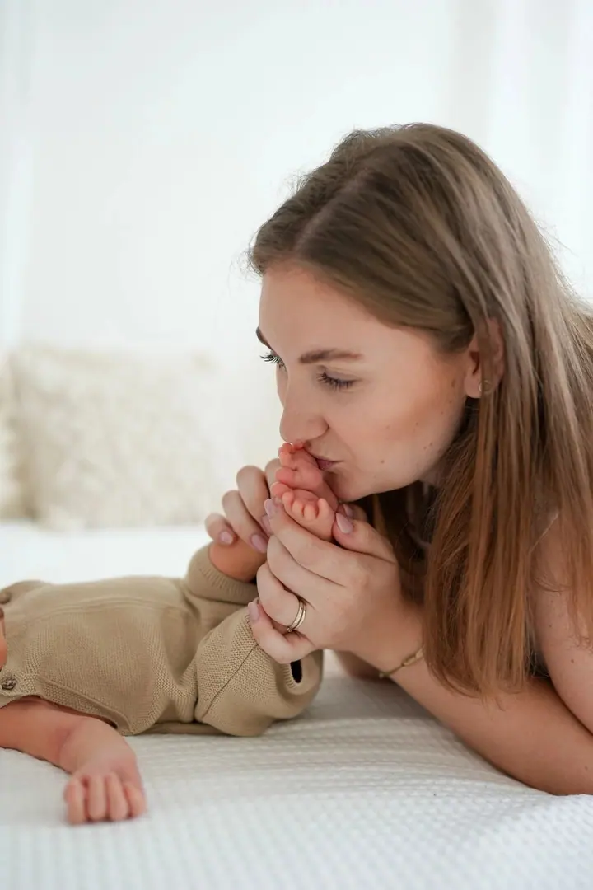
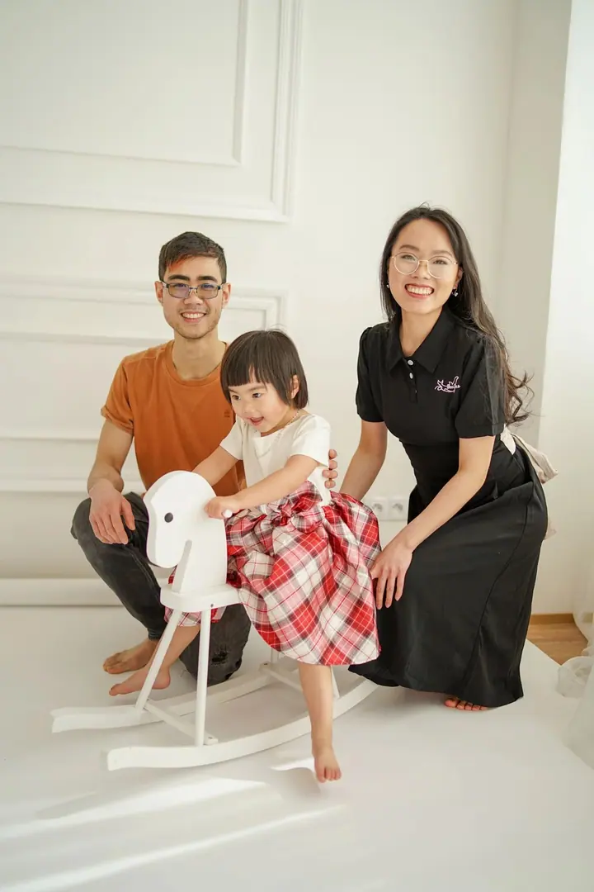
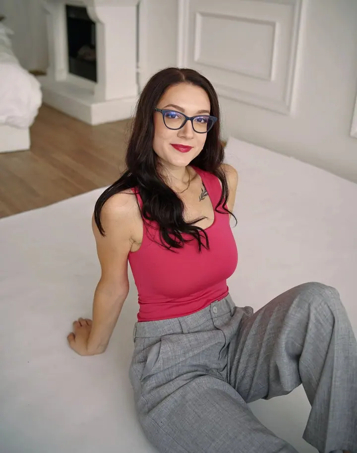

Svatební focení
Fotím nenápadně a pomůžu vám s harmonogramem i svatebními portréty, abyste si den užili naplno a bez stresu. Můžete si vybrat ze tří balíčků od komorního obřadu až po celý den od příprav po večerní zábavu.





Jmenuji se Lucie Špačková a fotím svatby, rodiny a miminka hlavně na Vysočině. Nejradši mám uvolněnou atmosféru a smích, žádné strojené pózy. Fotím venku i ve dvou ateliérech v Třebíči a Rosicích.
Více o mně
„Netvořím jen fotky, ale i vzpomínky, které vydrží navždy.“
— Lucie Špačková
Fotím nenápadně a pomůžu vám s harmonogramem i svatebními portréty, abyste si den užili naplno a bez stresu. Můžete si vybrat ze tří balíčků od komorního obřadu až po celý den od příprav po večerní zábavu.
Miminka fotím v klidných ateliérech v Třebíči a Rosicích, u vás doma nebo v přírodě. Ke každému miminku přistupuji individuálně a všechno vám během focení vysvětlím.
Děti si hrají, objímají maminku a tatínka a já se vás snažím rozesmát. Fotíme venku nebo v ateliéru, vždycky v uvolněné atmosféře.
Žádné strojené pózy, stačí si povídat, objímat se a užít si to spolu. Jde mi o pohledy plné lásky a upřímný smích.
Fotografie jsou ilustrační
K fotografování mě přivedl můj táta. Už od malička mě učil, jak zachytit krásu okolního světa skrze objektiv, a jeho vášeň pro fotografování přírody se propsala i do mého života. Dnes bydlím s manželem v rodinném domě v malé vesnici na Vysočině a jsem maminkou malého chlapečka.
Na focení miluji ty vzácné chvíle mezi partnery, v rodině a mezi dětmi. Dětský smích, pohled rodičů plný lásky. Proto nechci umělé pózy, ale skutečné momenty. Většinou vám nabídnu tykání, je to pak takové přátelštější, a dost často se vás snažím rozesmát svými vtípky.
Pokud jste se ještě nikdy nefotili a máte trochu strach, vůbec nemusíte. Nebudeme dělat nic, co by vám bylo nepříjemné. Stačí si spolu povídat, objímat se a děti si mohou hrát, třeba i kolo kolo mlýnský. Nejvíc fotím na Vysočině, v okolí Brna a Jihlavy, ale ráda za vámi přijedu kamkoliv po republice.

Ozvěte se přes kontaktní formulář nebo telefonem a domluvíme termín i to, jaké focení si představujete.
Se snoubenci se scházím zhruba měsíc nebo dva před svatbou a ráda doporučím i předsvatební focení. U ostatních focení si spolu projdeme styling a místo, venku nebo v ateliéru.
Povedu vás, ale hlavně se máte bavit, povídat si a smát se. Žádné strojené pózy, jen vy a vaše emoce.
Fotky pečlivě vyberu a upravím. Svatební galerii dostanete nejpozději do 6 týdnů v soukromé zaheslované galerii na Zoneramě.
Nemusíte mít žádné zkušenosti. Po celou dobu vás povedu tak, aby fotky působily přirozeně a vy jste se cítili uvolněně.
Ano. Nejčastěji fotím na Vysočině, v okolí Brna a Jihlavy, ale ráda za vámi přijedu i do dalších koutů republiky. V okolí Třebíče je doprava zdarma, u vzdálenějších míst účtuji cestovné podle aktuálních nákladů.
V ateliéru v Třebíči nebo v Rosicích, u vás doma nebo v přírodě. V obou ateliérech si můžete zapůjčit šaty, oblečení pro miminka, dečky i polštářky.
Podle balíčku minimálně 80, 300 nebo 500 upravených fotek. Je to minimum, a když váš den přinese víc krásných momentů, ráda vám jich odevzdám víc.